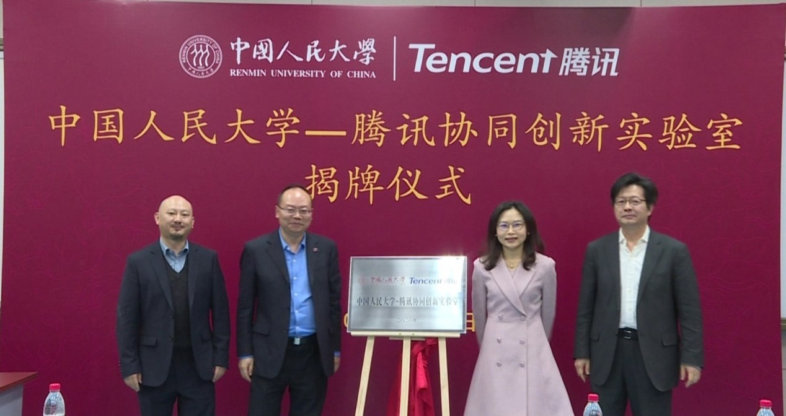

金融级分布式数据库 · 2019
中国人民大学—腾讯
协同创新实验室
人大—腾讯协同创新实验室成立于2019年，双方围绕金融级分布式数据库开展长期合作，聚焦数据库前沿技术探索与创新应用，致力于推动数据库关键核心技术突破与国产化替代。
联合实验室围绕金融级分布式数据库TDSQL，提出了数据多级一致性统一建模与验证、去中心化分布式事务处理、基于人工智能的无服务弹性伸缩与高可用、面向OLTP与OLAP的混合处理等一系列创新技术，相关成果已应用于腾讯分布式数据库TDSQL。截至目前，联合实验室已在SIGMOD、VLDB、TKDE等数据库领域顶级会议和期刊发表论文30篇，累计获得国内授权发明专利60件、海外授权发明专利30件。
相关成果已应用于中国TOP10银行中的7家。TDSQL作为首个投产于银行核心系统的国产数据库，已助力农业银行、中国银行、招商银行、平安银行等多家国有大型银行和股份制银行，在账务、支付结算、信用卡等核心业务系统中实现数据库国产化替代，为突破数据库领域关键核心技术、保障金融基础软件自主可控提供了重要支撑。
